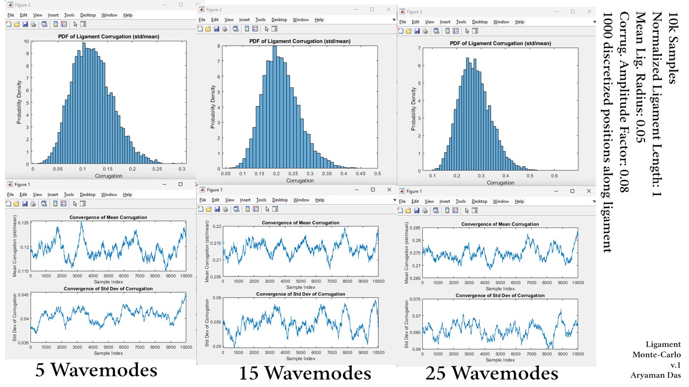
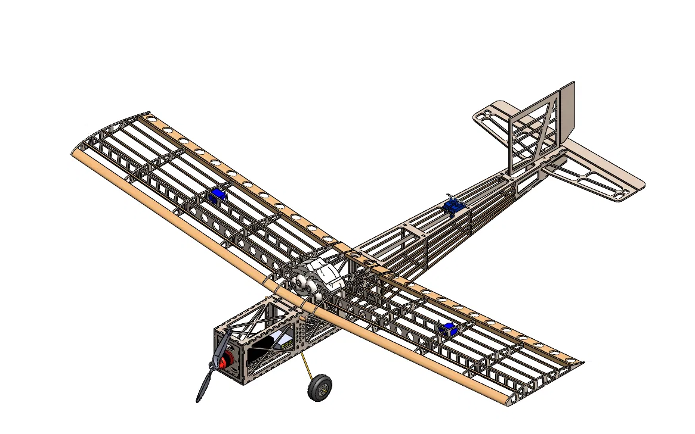
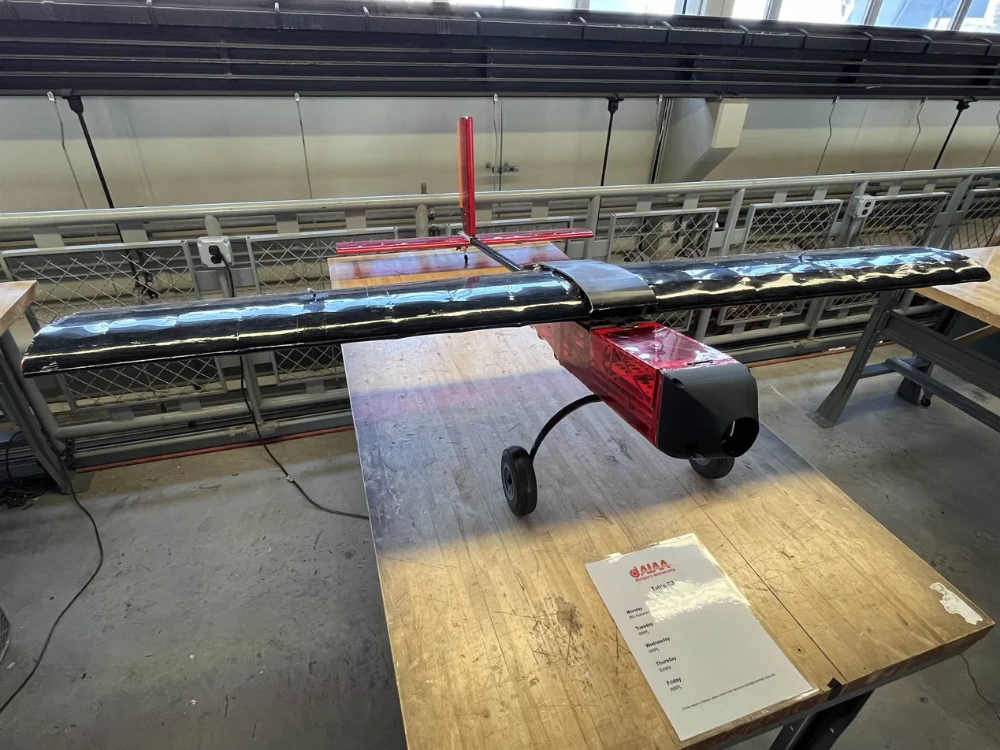

RUTGERS SCHOOL OF ENGINEERING — MECH. ENG.FILE NO. AD-ME-2028
DISTRIBUTION: UNLIMITEDDATE: —
Portfolio of Record. Aryaman Das. Mechanical Engineer, Aerospace Focus. B.S. Mechanical Engineering, Aerospace Focus — Rutgers University, New Brunswick — GPA 3.79 — Expected May 2028.
PORTFOLIO OF RECORD
Aryaman Das
Mechanical Engineer Aerospace Focus
B.S. Mechanical Engineering, Aerospace Focus — Rutgers University, New Brunswick — GPA 3.79 — Exp. May 2028
SECTION I SUMMARY
Sophomore Mechanical Engineering undergraduate at Rutgers University with an Aerospace focus.
Work spans structural design, aerodynamics, and applied robotics — currently leading the
mechanical design of an open-source quadruped robot, analyzing aerostructures for a competition
UAV, and, prior to that, building simulation tooling for fluid dynamics research. Interested in
the overlap between lightweight structural design and controls.
SECTION II ENGINEERING EXPERIENCE
II.A Rutgers Dynamics — Quadruped Research & Robotics
ROLE
Co-Founder & Lead Mechanical Engineer
PERIOD
Aug 2025 – Present
TOOLS
SolidWorks, Fusion 360, MuJoCo, NVIDIA Isaac Sim, CNC
Co-founded Rutgers' first student-run robotics lab and lead an 8-member mechanical team
designing a lightweight, ultra-low-cost open-source quadruped to compete at ICRA 2026, built
in collaboration with the Caltech Robotics Team and Columbia Robotics Club. Architected
structural components using topology-inspired optimization, carbon-fiber-reinforced nylon,
and wood-based composites to hold down weight and cost, and ran DFM and CNC machining
sessions to keep the design language consistent across the team. Cut overall mass by 35% and
brought total platform cost to under 10% of comparable quadrupeds, with gait stability
validated in MuJoCo and Isaac Sim before hardware builds.
II.B Indian Institute of Science (IISc) — Fluid Atomization Research
ROLE
Research Intern, under Prof. Saptarshi Basu
PERIOD
May 2025 – Oct 2025
TOOLS
MATLAB
Built a MATLAB-based Monte Carlo simulation tool to statistically model fluid particle
behavior during the atomization process, aggregating 100,000 waveforms across parameter
sweeps — wave modes, corrugation amplitudes — with automated visualization (PDFs, scatter
plots, log-log plots). Findings were presented at the Droplets Conference in Belgium and the
APS Division of Fluid Dynamics Meeting in the United States.

FIG. 2 — Monte Carlo convergence & corrugation PDFs, 5 / 15 / 25 wavemodes, 10,000 samples each.
II.C AIAA's RU Airborne — Design-Build-Fly
ROLE
Aerodynamicist & Aerostructures Analyst
PERIOD
Sept 2024 – Present
TOOLS
MATLAB, XFLR5
Evaluated aerodynamic performance for the team's Design-Build-Fly UAV and modernized a legacy
flightpath simulation codebase, rewriting roughly a quarter of it. Developed MATLAB Monte
Carlo flight simulations that account for environmental variability drawn from aggregated
real-world conditions, contributing to a design that placed 15th out of 112 teams
internationally.

FIG. 3 — CAD assembly of the Design-Build-Fly airframe.

FIG. 4 — Completed airframe ahead of competition judging.
SECTION III SPECIFICATIONS
CATEGORY
ITEM
Design & Simulation
SolidWorks, Fusion 360, AutoCAD, OnShape, XFLR5, MuJoCo, NVIDIA Isaac Sim
Chief Page Editor for The Medium at Rutgers. Contributed 100+ Wikipedia edits across STEM,
civil, and modern defense topics, collectively viewed more than 3 million times. Restores
dysfunctional electric and manual typewriters and cassette players — full disassembly,
diagnosis, and repair, no documentation required.